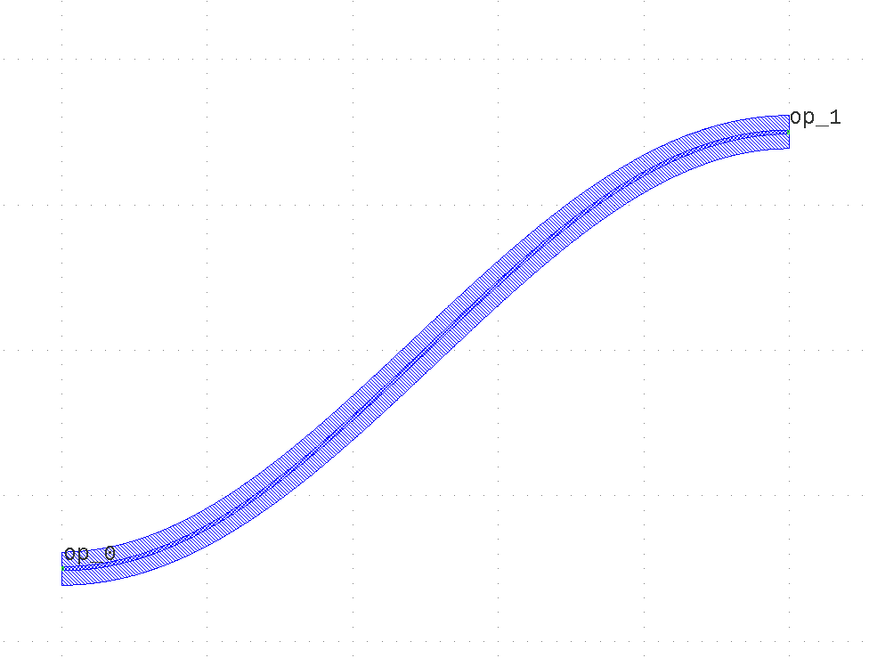

Module gpdk.components.sbend.sbend_cosine
Expand source code
import math
from dataclasses import dataclass
from functools import cached_property
from typing import Optional, Tuple
from fnpcell import all as fp
from gpdk.technology import get_technology
@dataclass(frozen=True)
class SCosine(fp.g.FunctionCurve):
distance: float
height: float
transform: fp.Affine2D = fp.Affine2D.identity()
def curve_function(self, t: float):
t = fp.clamp(t, 0, 1)
theta = math.pi + t * math.pi
x = self.distance * t
y = math.cos(theta) * self.height / 2
return (x, y)
@property
def raw_end_orientations(self) -> Optional[Tuple[float, float]]:
return (math.pi, 0)
@fp.pcell_class()
@dataclass(eq=False)
class SBendCosine(fp.IWaveguideLike, fp.PCell):
"""
Attributes:
distance: defaults to 20
height: defaults to 10
min_radius: required=False
waveguide_type: type of waveguide
port_names: defaults to ["op_0", "op_1"]
Examples:
```python
TECH = get_technology()
sbend = SBendCosine(name="f", distance=100, height=15, min_radius=15, waveguide_type=TECH.WG.FWG.C.WIRE)
fp.plot(sbend)
```

"""
distance: float = fp.PositiveFloatParam(default=20).as_field()
height: float = fp.FloatParam(default=10, invalid=[0]).as_field()
waveguide_type: fp.IWaveguideType = fp.WaveguideTypeParam().as_field()
port_names: fp.IPortOptions = fp.PortOptionsParam(count=2, default=("op_0", "op_1")).as_field()
def _default_waveguide_type(self):
return get_technology().WG.FWG.C.WIRE
@cached_property
def raw_curve(self):
return SCosine(distance=self.distance, height=self.height)
def build(self) -> Tuple[fp.InstanceSet, fp.ElementSet, fp.PortSet]:
insts, elems, ports = super().build()
wg = self.waveguide_type(curve=self.raw_curve).with_ports(self.port_names)
insts += wg
ports += wg.ports
return insts, elems, ports
if __name__ == "__main__":
from pathlib import Path
gds_file = Path(__file__).parent / "local" / Path(__file__).with_suffix(".gds").name
library = fp.Library()
TECH = get_technology()
# =============================================================
# fmt: off
library += SBendCosine()
# fmt: on
# =============================================================
fp.export_gds(library, file=gds_file)
# fp.plot(library)Classes
class SBendCosine (name: str = None, bands: Optional[FrozenSet[fnpcell.interfaces.IBand]] = None, patches: Tuple[fnpcell.interfaces.IElement, ...] = (), port_names: Sequence[Union[None, str, fnpcell.interfaces.Hidden]] = ('op_0', 'op_1'), transform: fnpcell.transform.Affine2D = None, distance: float = 20, height: float = 10, waveguide_type: fnpcell.interfaces.IWaveguideType = None)-
Attributes
distance- defaults to 20
height- defaults to 10
min_radius- required=False
waveguide_type- type of waveguide
port_names- defaults to ["op_0", "op_1"]
Examples:
TECH = get_technology() sbend = SBendCosine(name="f", distance=100, height=15, min_radius=15, waveguide_type=TECH.WG.FWG.C.WIRE) fp.plot(sbend)
Expand source code
class SBendCosine(fp.IWaveguideLike, fp.PCell): """ Attributes: distance: defaults to 20 height: defaults to 10 min_radius: required=False waveguide_type: type of waveguide port_names: defaults to ["op_0", "op_1"] Examples: ```python TECH = get_technology() sbend = SBendCosine(name="f", distance=100, height=15, min_radius=15, waveguide_type=TECH.WG.FWG.C.WIRE) fp.plot(sbend) ```  """ distance: float = fp.PositiveFloatParam(default=20).as_field() height: float = fp.FloatParam(default=10, invalid=[0]).as_field() waveguide_type: fp.IWaveguideType = fp.WaveguideTypeParam().as_field() port_names: fp.IPortOptions = fp.PortOptionsParam(count=2, default=("op_0", "op_1")).as_field() def _default_waveguide_type(self): return get_technology().WG.FWG.C.WIRE @cached_property def raw_curve(self): return SCosine(distance=self.distance, height=self.height) def build(self) -> Tuple[fp.InstanceSet, fp.ElementSet, fp.PortSet]: insts, elems, ports = super().build() wg = self.waveguide_type(curve=self.raw_curve).with_ports(self.port_names) insts += wg ports += wg.ports return insts, elems, portsAncestors
- fnpcell.interfaces.IWaveguideLike
- fnpcell.interfaces.ICurveLike
- fnpcell.interfaces.ICurvedCellRef
- fnpcell.interfaces.ICurved
- fnpcell.pdk.pcell.PCell
- fnpcell.cell.cell_ref.CellRef
- fnpcell.mixin.transform_mixin.TransformMixin
- fnpcell.interfaces.ICellRef
- fnpcell.interfaces.IUpdatable
- fnpcell.interfaces.IElement
- fnpcell.interfaces.IRunnable
- fnpcell.interfaces.IAffineTransformable
Class variables
var distance : floatvar height : floatvar port_names : Sequence[Union[None, str, fnpcell.interfaces.Hidden]]var waveguide_type : fnpcell.interfaces.IWaveguideType
Instance variables
var raw_curve : fnpcell.interfaces.ICurve-
Expand source code
def __get__(self, instance, owner=None): if instance is None: return self if self.attrname is None: raise TypeError( "Cannot use cached_property instance without calling __set_name__ on it.") try: cache = instance.__dict__ except AttributeError: # not all objects have __dict__ (e.g. class defines slots) msg = ( f"No '__dict__' attribute on {type(instance).__name__!r} " f"instance to cache {self.attrname!r} property." ) raise TypeError(msg) from None val = cache.get(self.attrname, _NOT_FOUND) if val is _NOT_FOUND: with self.lock: # check if another thread filled cache while we awaited lock val = cache.get(self.attrname, _NOT_FOUND) if val is _NOT_FOUND: val = self.func(instance) try: cache[self.attrname] = val except TypeError: msg = ( f"The '__dict__' attribute on {type(instance).__name__!r} instance " f"does not support item assignment for caching {self.attrname!r} property." ) raise TypeError(msg) from None return val
Methods
def build(self) ‑> Tuple[fnpcell.pdk.collection.InstanceSet, fnpcell.pdk.collection.ElementSet, fnpcell.pdk.collection.PortSet]-
Abstract method must be implemented to build a pcell.
Expand source code
def build(self) -> Tuple[fp.InstanceSet, fp.ElementSet, fp.PortSet]: insts, elems, ports = super().build() wg = self.waveguide_type(curve=self.raw_curve).with_ports(self.port_names) insts += wg ports += wg.ports return insts, elems, ports
class SCosine (distance: float, height: float, transform: fnpcell.transform.Affine2D = Affine2D.identity())-
SCosine(args: Any, *kwargs: Any)
Expand source code
class SCosine(fp.g.FunctionCurve): distance: float height: float transform: fp.Affine2D = fp.Affine2D.identity() def curve_function(self, t: float): t = fp.clamp(t, 0, 1) theta = math.pi + t * math.pi x = self.distance * t y = math.cos(theta) * self.height / 2 return (x, y) @property def raw_end_orientations(self) -> Optional[Tuple[float, float]]: return (math.pi, 0)Ancestors
- fnpcell.geometry.function_curve.FunctionCurve
- fnpcell.mixin.transform_mixin.TransformMixin
- fnpcell.interfaces.IUpdatable
- fnpcell.geometry.curve_mixin.CurveMixin
- fnpcell.interfaces.ICurve
- fnpcell.interfaces.ICurveLike
- fnpcell.interfaces.IAffineTransformable
Class variables
var distance : floatvar height : floatvar transform : fnpcell.transform.Affine2D
Instance variables
var raw_end_orientations : Optional[Tuple[float, float]]-
Expand source code
@property def raw_end_orientations(self) -> Optional[Tuple[float, float]]: return (math.pi, 0)
Methods
def curve_function(self, t: float)-
Expand source code
def curve_function(self, t: float): t = fp.clamp(t, 0, 1) theta = math.pi + t * math.pi x = self.distance * t y = math.cos(theta) * self.height / 2 return (x, y)